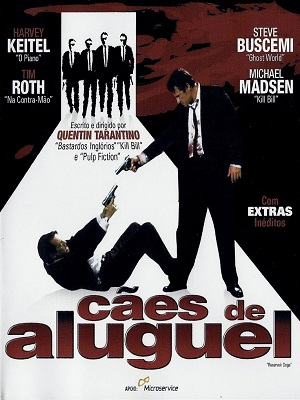
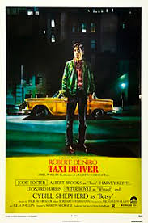

Os caminhos de varios criminosos se cruzam nestas tres historias de Quentin Tarantino.
Um pistoleiro se apaixona pela mulherde seu chefe, um boxeador nao se sai bem em uma luta e um casal
tenta executar um plano de roubo que foge do controle.
Sin City - A cidade do pecado
Um misterioso vendedor narra uma trágica história de co-dependência enquanto um vigilante mergulha no submundo à
procura de seu amor perdido. Em outra parte da cidade, um policial persegue um assassino de crianças e uma
ex-prostituta escapa de seu cafetão com a ajuda do novo namorado.
Caes de Aluguel

Criminoso reúne seis bandidos para grande roubo de diamantes. Algo sai errado e um deles é ferido durante roubo e os bandidos precisam
descobrir quem foi que os traiu, o que gera enorme tensão no grupo e enfraquece a todos.
Django Livre
No sul dos Estados Unidos, o ex-escravo Django faz uma aliança inesperada com o caçador de recompensas Schultz para caçar os criminosos mais procurados
do país e resgatar sua esposa de um fazendeiro que força seus escravos a participar de competições mortais.
Taxi Driver

O motorista de táxi de Nova York Travis Bickle, veterano da Guerra do Vietnã, reflete constantemente sobre a corrupção da vida ao seu redor
e sente-se cada vez mais perturbado com a própria solidão e alienação. Apesar de não conseguir fazer contato emocional com ninguém e viver uma vida
questionável em busca de diversão, ele se torna obcecado em ajudar uma prostituta de 12 anos que entra em seu táxi para fugir de um cafetão.